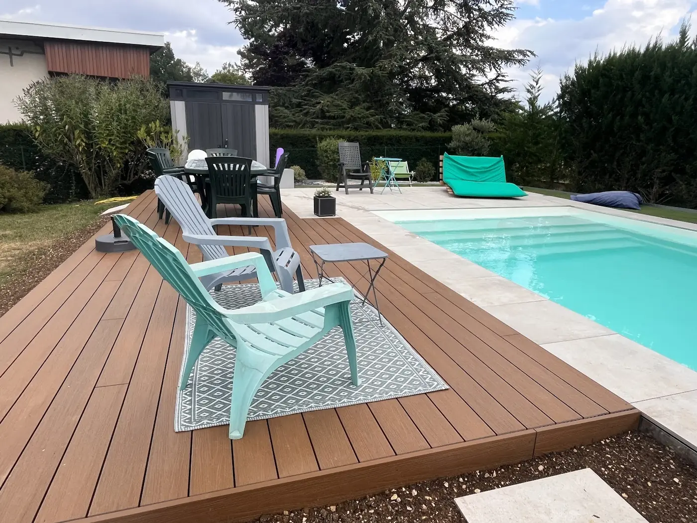
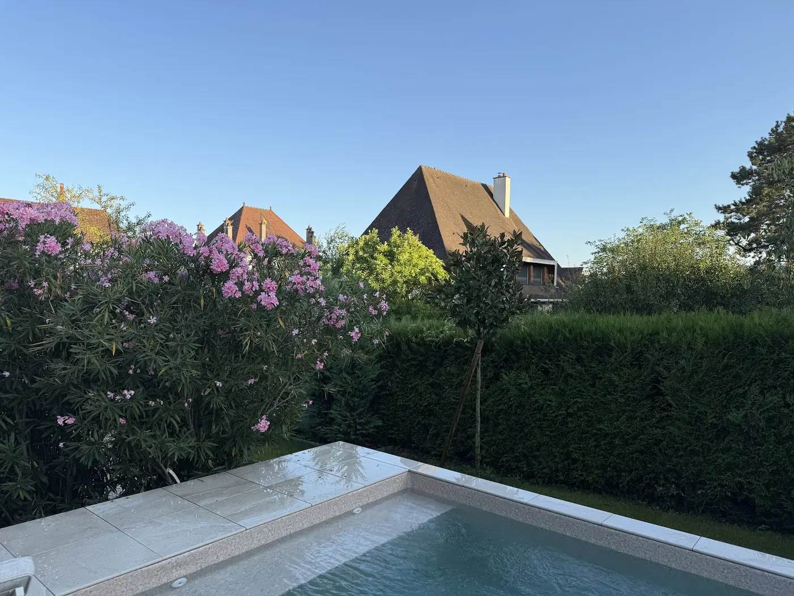
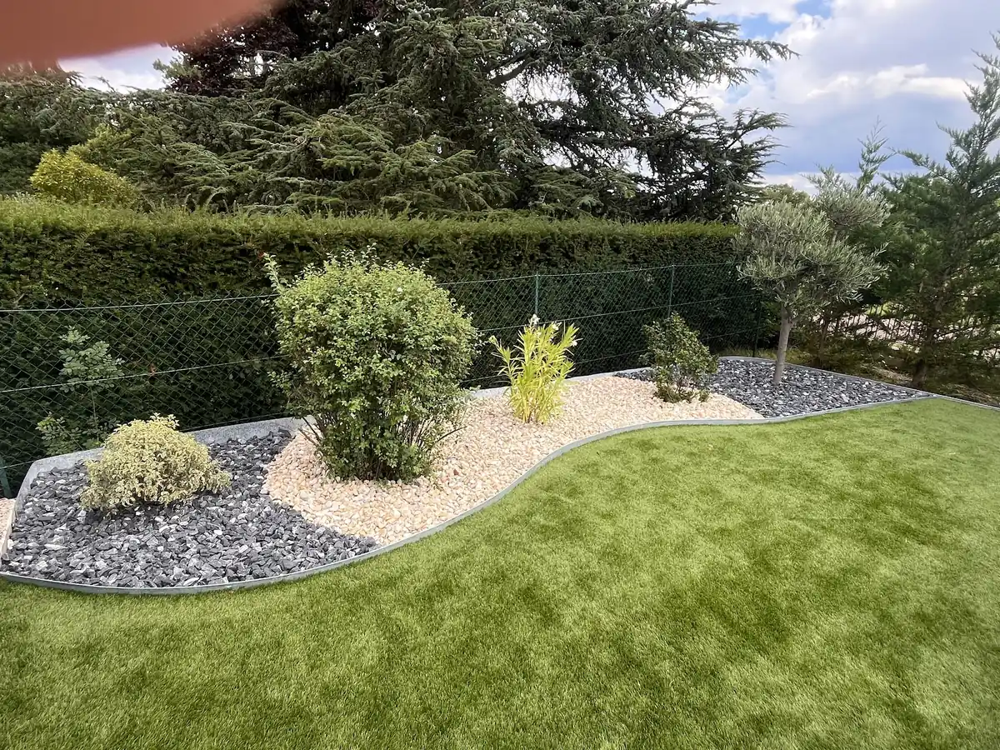
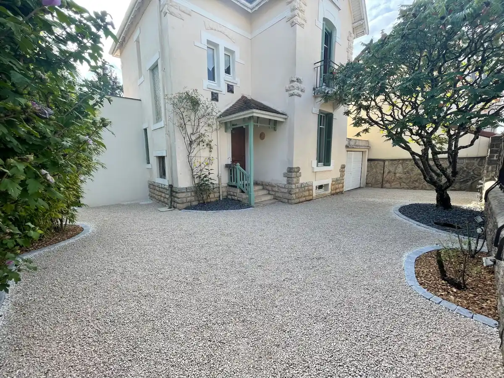
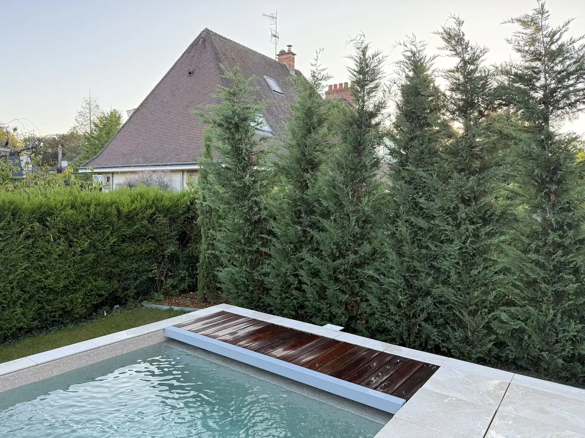
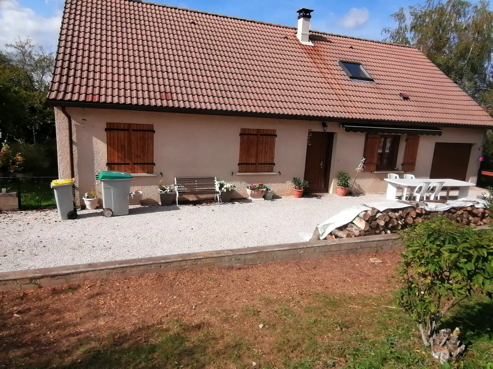
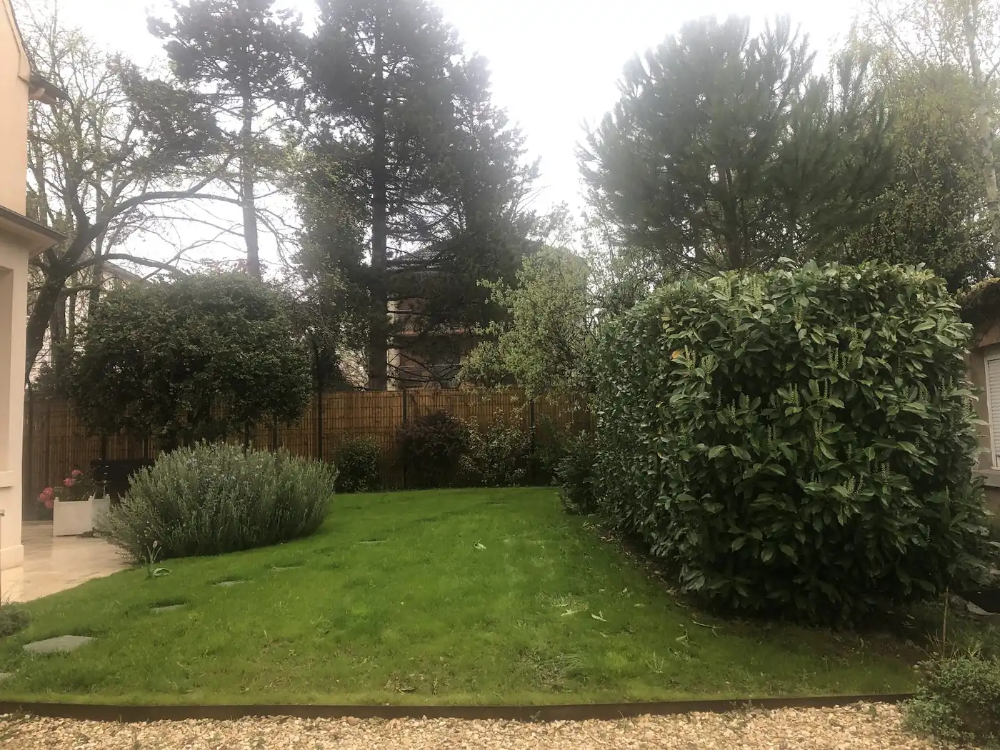
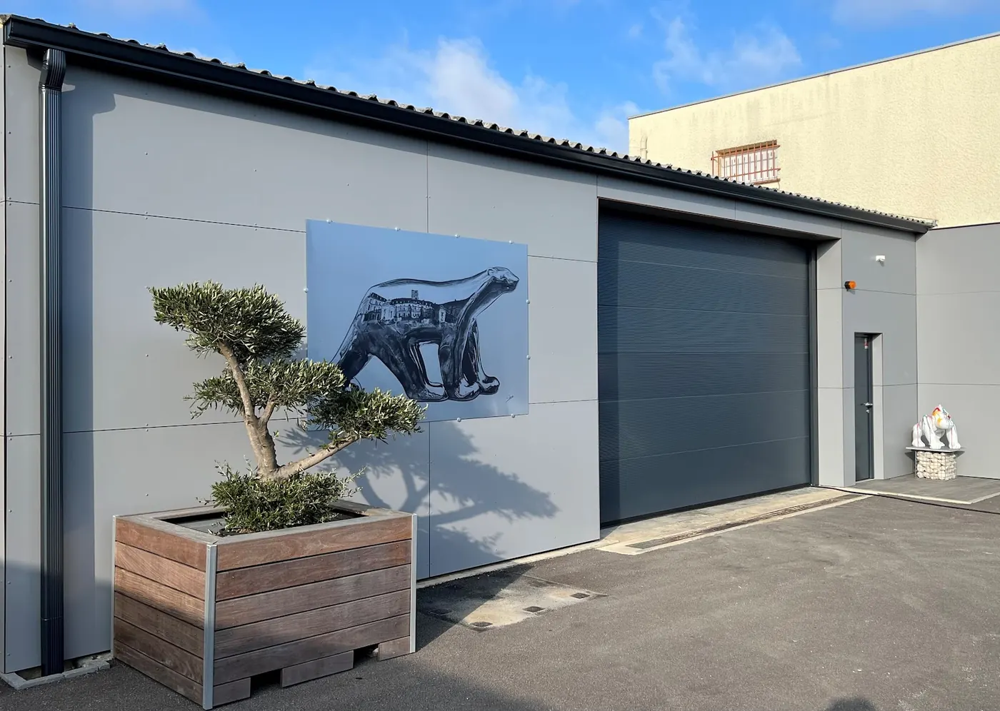

Paysagiste · Dijon & Côte-d’Or
Des jardins soignés,
pensés pour y vivre
Terrasses, abords de piscine, clôtures, haies et création d’espaces verts — par une équipe locale notée 5,0 / 5 sur Google.
5,0 / 5 · 203 avis Google · depuis 2013

5,0Note Google
203Avis clients
2013Année de création
DijonBase & interventions
Réalisations
Des projets concrets,
du terrain à la finition
Photos issues de la fiche Google Maps publique de MB Paysage. Les clients citent surtout les terrasses, les abords de piscine, les haies et le travail soigné en fin de chantier.







Preuve sociale
Ce que disent
les clients Google
Extraits publics, non modifiés. Note globale 5,0 / 5 sur 203 avis.
★★★★★« Terrasses et portillon… un travail réalisé à la perfection. Entreprise à l’écoute, très réactive, efficace. »
★★★★★« Aménagement des abords de notre piscine… absolument ravis. Benjamin est très sympathique et réactif. »
★★★★★« Travail soigné, effectué par une équipe sympathique et motivée. Efficacité et rapidité très appréciables. »
★★★★★« Très belle rénovation d’un cabanon… toiture entièrement refaite. Le travail est comme habituellement parfaitement réalisé. »
Simple et clair
Comment ça se passe
-
01
Vous appelez ou écrivez
Vous décrivez le projet : jardin, terrasse, piscine, clôture, entretien…
-
02
Visite & devis
Benjamin et l’équipe analysent le terrain, conseillent, et envoient un devis clair.
-
03
Chantier soigné
Les avis insistent sur le respect des délais, le nettoyage et la finition.
Prochaine étape
Parlons de votre jardin
Démo non publiée — aucun message n’est envoyé. Pour un vrai projet, appelez MB Paysage au numéro ci-dessous.
06 25 23 47 78